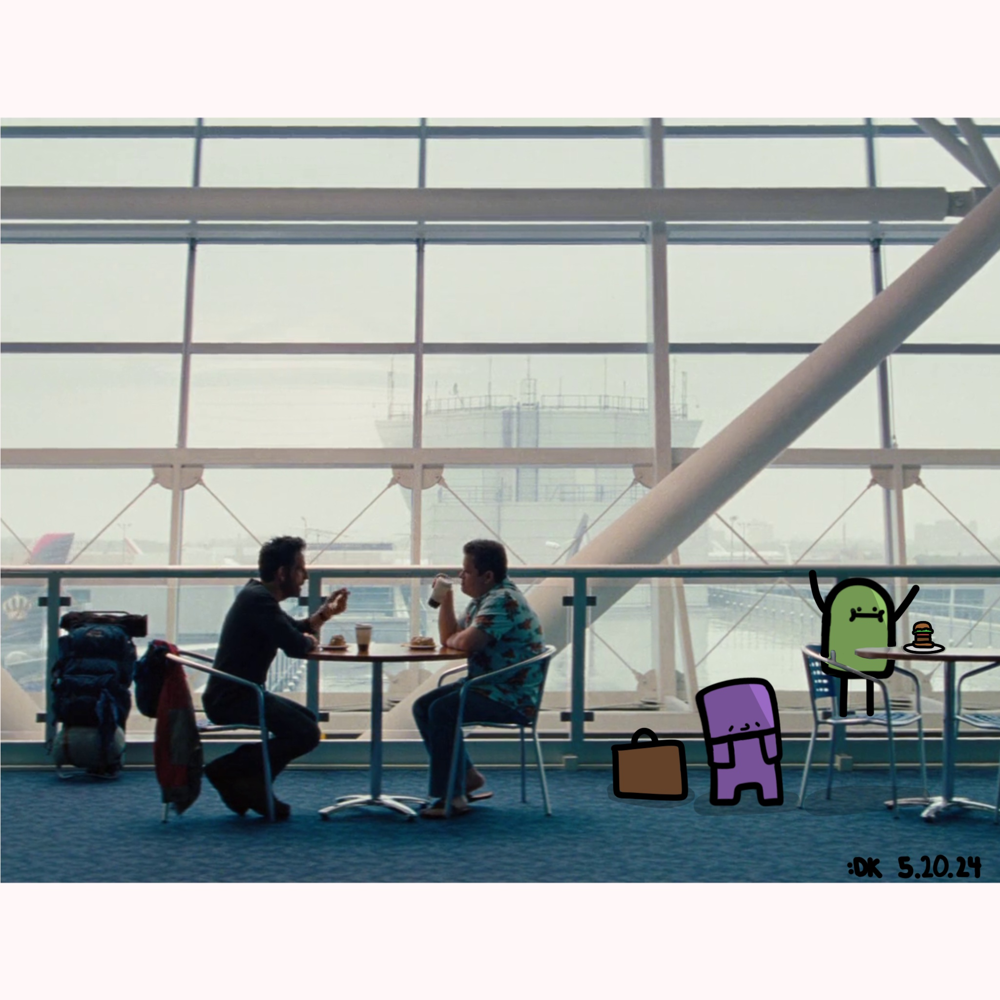
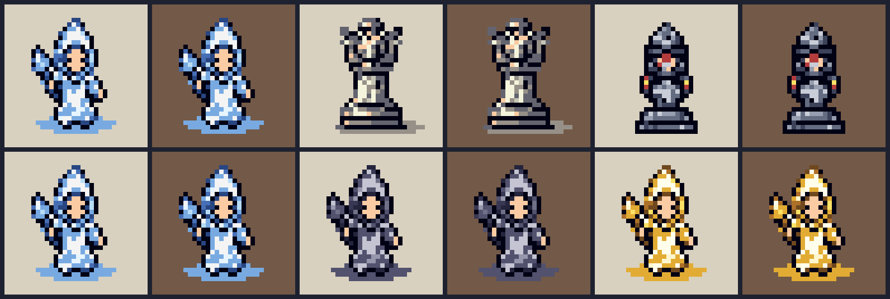
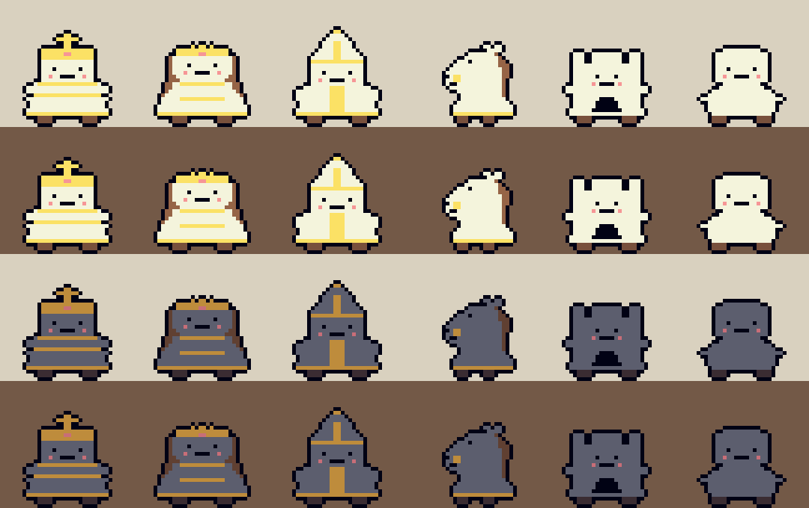
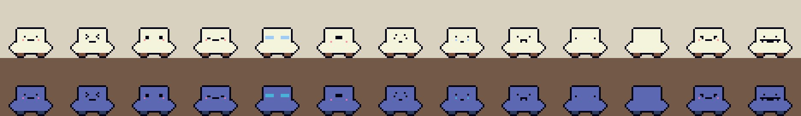

Picked the project back up after a few weeks away and deliberately
spent the first day deleting things. Going looking for
over-engineering got me 176 lines lighter: fifteen
near-identical blocks collapsed into one, two movement types merged
into one, and the Queen removed entirely — there was
no way to actually get one, in a loadout or a pull or a promotion.
Then the things that had been failing quietly: a save interrupted
halfway can no longer corrupt the file, a bad join code gets rejected
instead of sitting on "Connecting..." forever, and someone who leaves
forfeits rather than freezing the game for whoever stayed.
Three bigger systems followed. Online play — direct-IP
thrown out entirely for a brokered relay with Find Match and join
codes, because nobody was ever going to read an IP address out to a
friend. Picking a match back up after the phone has
been put to sleep, which mostly meant never waiting on "Reconnecting"
forever. And accounts, with progress saved to the
cloud — where the interesting cases are all the ugly ones:
starting the game just as an upload is still in flight, and a real
conflict between two devices, which gets a "pick your progress" screen
rather than a guess.
The shape change I had been avoiding. The board went from 5x6 to
7x8, with a six-unit loadout arranged around the king
and a two-square first move for pawns — the old board was fine for
testing the engine and bad for playing, with nowhere to develop into
and no room for a loadout to express a strategy. Three units came in
with it, and the Frost Mage was immediately too strong
and got nerfed to a single step by the end of the week.
The rest was clarity, which is most of what a game with this many
special rules needs. The board flips for Player Two
online, and the piece info panel generates its descriptions
from the unit definitions themselves, so a unit's page
structurally cannot drift out of sync with its rules. I also did a feel
pass and partly undid it — pieces glided to their destination, then I
dropped the glide because at phone speed it read as lag rather than
motion.
Every piece also switched over to a pixel set this
week, which took a few goes to get right. The first directions were
too detailed — proper little RPG sprites with robes and staves, which
looked great at four times the size and turned into noise on a phone.

What worked was going blunter and rounder: one readable silhouette per unit, the same two team colours throughout, and no detail that does not survive being shrunk to a square on the board.

The biggest week the project has had, in two directions at once:
making it look like a game, and making it safe to be one. The
look was a Cosy Board style layer across every screen,
a Collection page, per-piece skins, and board themes won from the pull.
The economy got rebuilt around one pull for both units and
skins, skins being the genuinely rare thing at 7.3% — which
meant shipping the real-world bits too: ads, a consent prompt, a
privacy policy and a signed store build.
Then the part that mattered most. The server owns the economy
now, and there is exactly one place in the game allowed to
change what a player owns. When the server answers, its numbers
replace what is on the device rather than being
merged into it — merging would mean anything someone had edited into
their own save file survived forever. One consequence worth stating
plainly: the server only pays out for a match it can actually see, so
local matches no longer pay.
The end of September was almost entirely roster, with a rule for it: each new unit has to claim a verb the roster does not already have. Not a stat line, a verb. That turned "add more units" into a checklist of things the game could not yet do — the Tide (a square your opponent cannot stand in), the Hostage-taker (conversion, the big missing one), the Mirror (it moves as whatever you just moved), plus the first support piece, the first unit that grows, and one you do not control at all. The pace was only survivable because the engine is data-driven, and because the self-play bot found a pawn bug inside the Tide I would not have hit by hand for weeks. I also built a shared library of faces so the new units would read as belonging to the same set, then had to redraw five sprites that looked fine in the file and turned to mush at actual board size.
